Home Open What is the one thing you tap first? Gut must be a check that runs, not Bristol school. 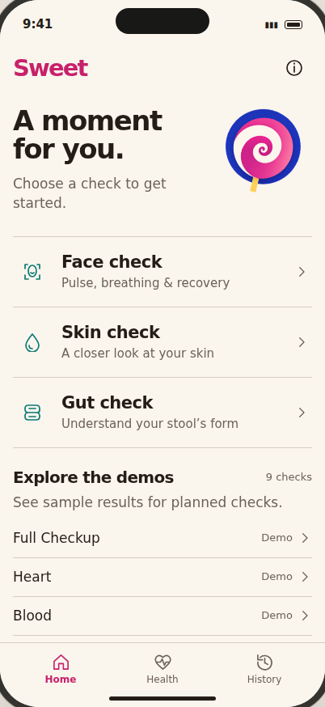Codex. Equal Face / Skin / Gut rows. Spiral as a side mark. Demos listed. No giant teal button. 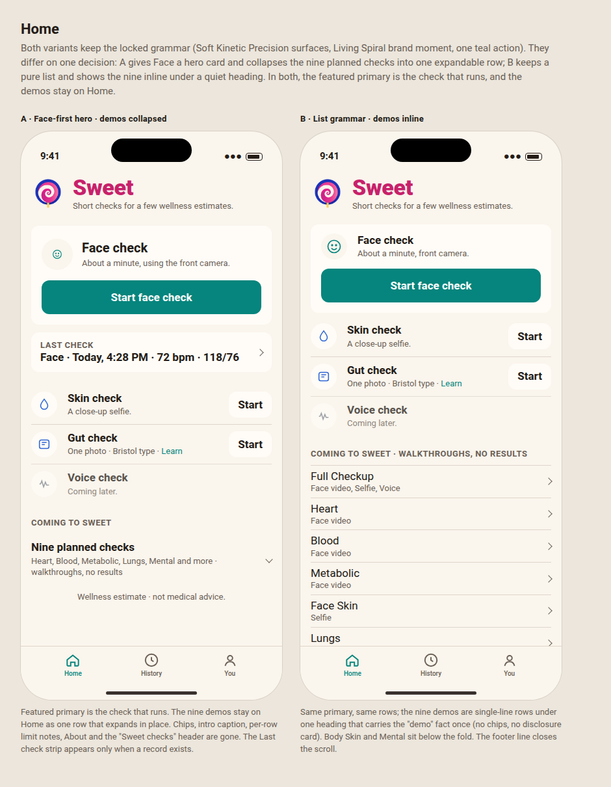Fable A / B (board). Face hero + big Start. Demos collapsed (A) or listed (B). 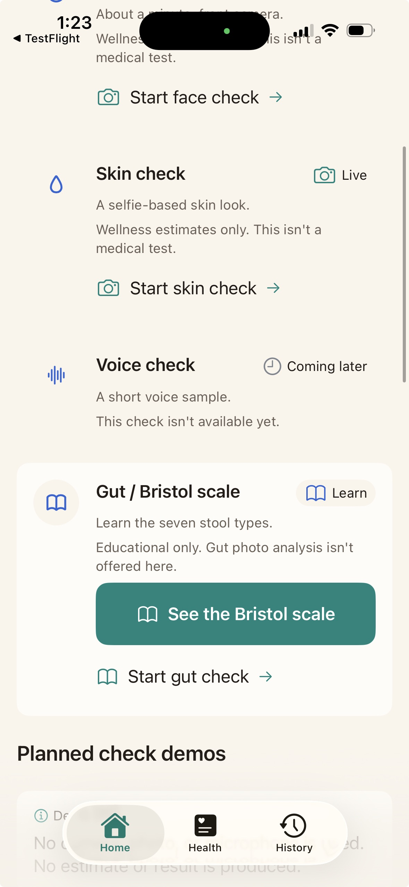Ranya, build 14. Featured Gut is a textbook: book icon, huge “See the Bristol scale.” The comment box below is for these Home screens — not the next section. Recommendation. Don’t keep the book CTA. Codex matches your tab bar. Fable is clearer “tap Face.” Home first glance Codex restrained rows Fable A — Face hero + big Start; demos collapsed Fable B — Face Start large; demos listed Hybrid: Codex rows + Start only on Face Mock another round — show more directions Your comments on the Home screens above
Face capture Open One oval = position, lock, progress, signal. STOP only. 4–8 heroes is the result, not this screen. 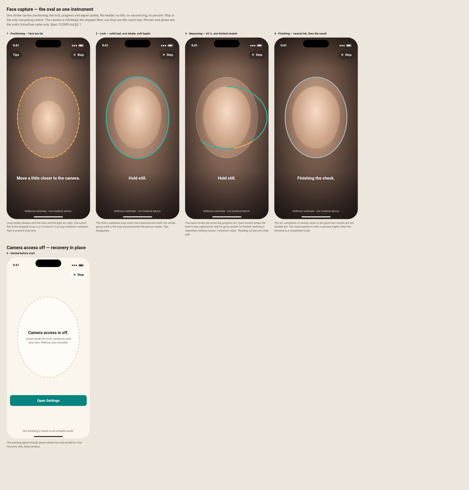Fable. Oval states: too far → hold still → measuring → finish. Timeout should coach. 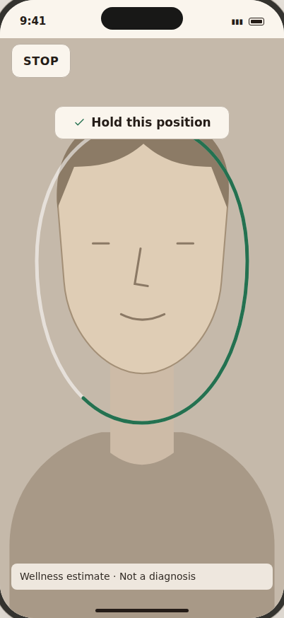Codex. Same one-oval idea, simpler. 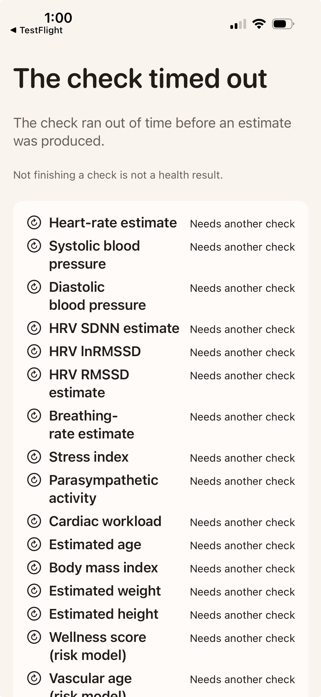Ranya timeout. Grey ring. 16 empty “Needs another check” rows. The comment box below is for Face capture (these phones) — oval height, blur, green ring, timeout. Not the result tiles. Face capture Fable one-oval states as the start Codex simpler oval as the start Mock another round — show more directions Your comments on the Face capture screens above
Face result Starting pick: 4–8 heroes Not heart-rate-only. Several tiles on the first glance, then the rest grouped. Still steerable. 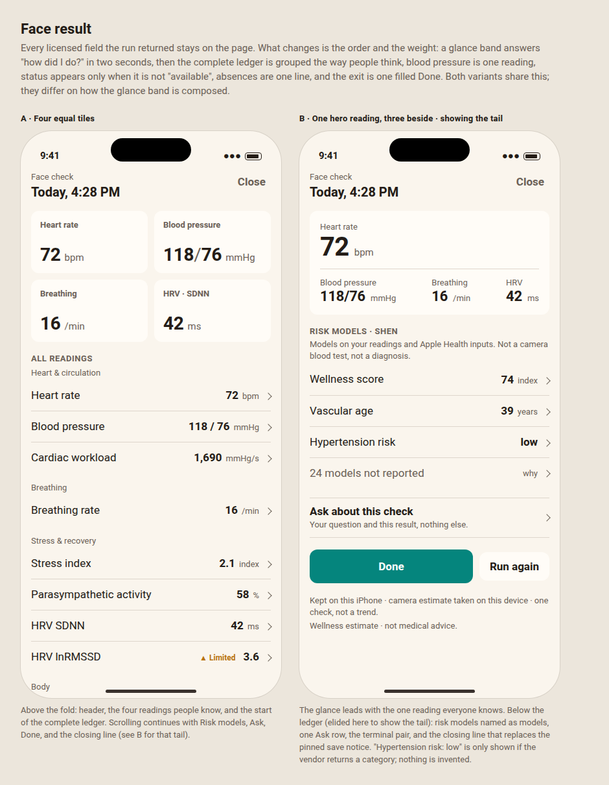Fable A / B. A = four equal tiles (the idea you picked). B = HR hero (out). The comment box below is for Face result (this board) — not capture. Face result Keep 4–8 hero tiles, not HR-only Change: HR as the single hero Mock another round — show more directions Your comments on the Face result screens above How a Face number becomes useful What it is + so-what + when to check in. Real ranges only. Age / distribution only when we have the data Number + short sentence only Mock another round — show more directions Your comments on Face meaning
Skin capture Open Inner oval should teach “fill the shape” without eight bullets. 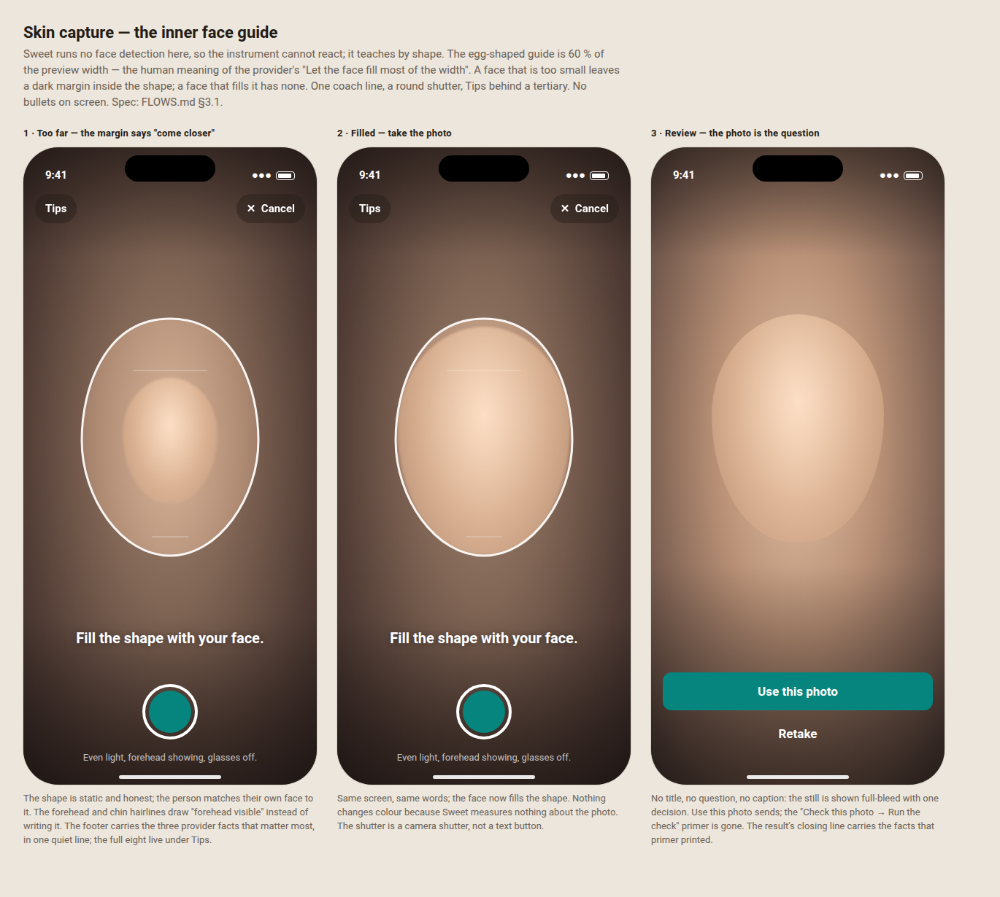Fable. Inner oval, come closer, shutter. Close-up selfie. The comment box below is for Skin capture (this board) — not the 0–100 result list. Skin capture Fable fill-guide as the start Mock another round — show more directions Your comments on the Skin capture screens above
Skin result 0–100 fails A vs B only sorts the same useless numbers. You and Ranya both said 0–100 is not a result. 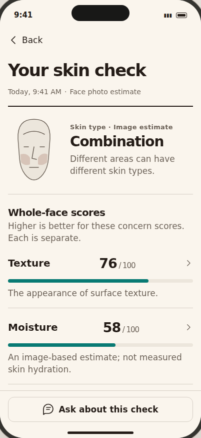Codex. Two 0–100 bars. The meaningless version. 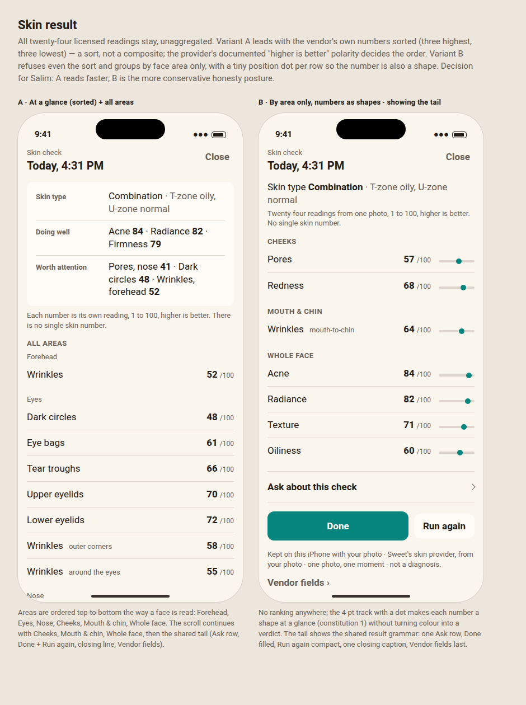Fable A / B. A = sorted glance. B = walk the face, no ranking. 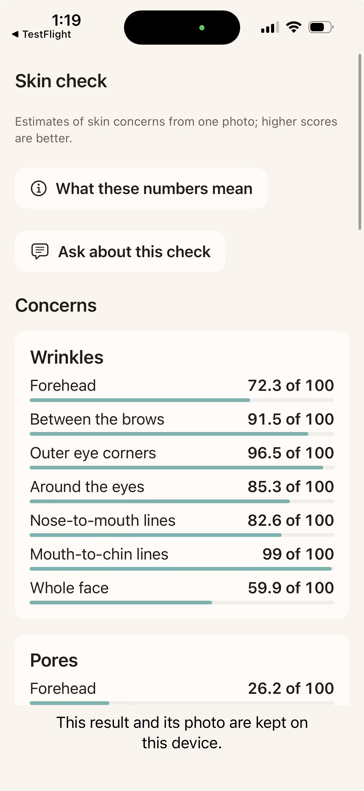Ranya. “Higher scores are better.” Zero context. 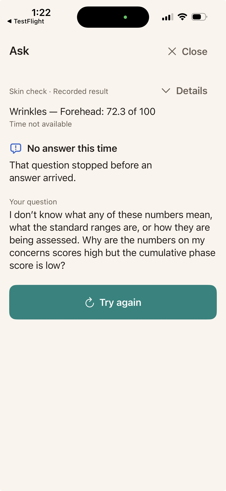“Ugh.” Ask died when she asked what the numbers mean. The comment box below is for Skin result (these phones) — meaning, not the capture oval. Recommendation. Mock meaning-first (what / may help / when to check in). Don’t invent Botox cutoffs. Skin result layout Skip A/B. Mock meaning-first, then I’ll pick Fable A — sorted glance for now Fable B — by area only Mock another round — show more directions Your comments on the Skin result screens above Skin meaning Same three-part stack as Gut. No 0–100 as the headline Hide numbers until Perfect Corp ranges exist Keep 0–100 but always pair with a human sentence Mock another round — show more directions Your comments on Skin meaning
Gut Grammar: three-part stack Horizontal Bristol 1–7 (3/4/5 green, 2/6 orange, 1/7 nearer red). What this means / What may help / When to check in with a clinician. Never “Red flags.” 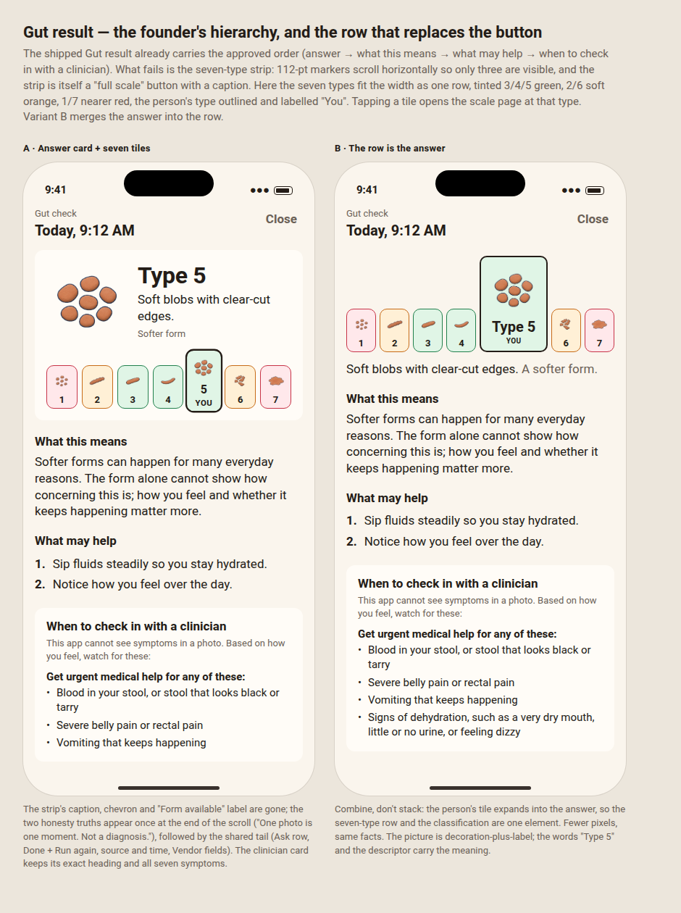Fable. Seven types on one row. Clinician card fully visible. 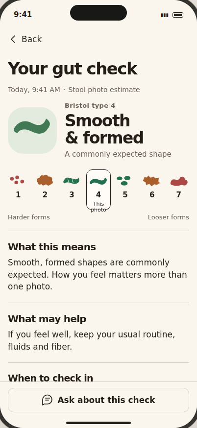Codex. Same hierarchy; Ask clips the clinician block. Don’t ship that. The comment box below is for these Gut result screens. Gut result Fable: full row + stack fully visible Codex hierarchy, never clip clinician Mock another round — show more directions Your comments on the Gut screens above
History Samples are not your photos. Your checks = you ran them. Samples = factory/tester stills. Fable drops Samples from Release. 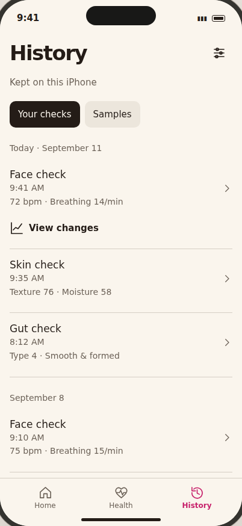Codex. Still has Your checks / Samples. 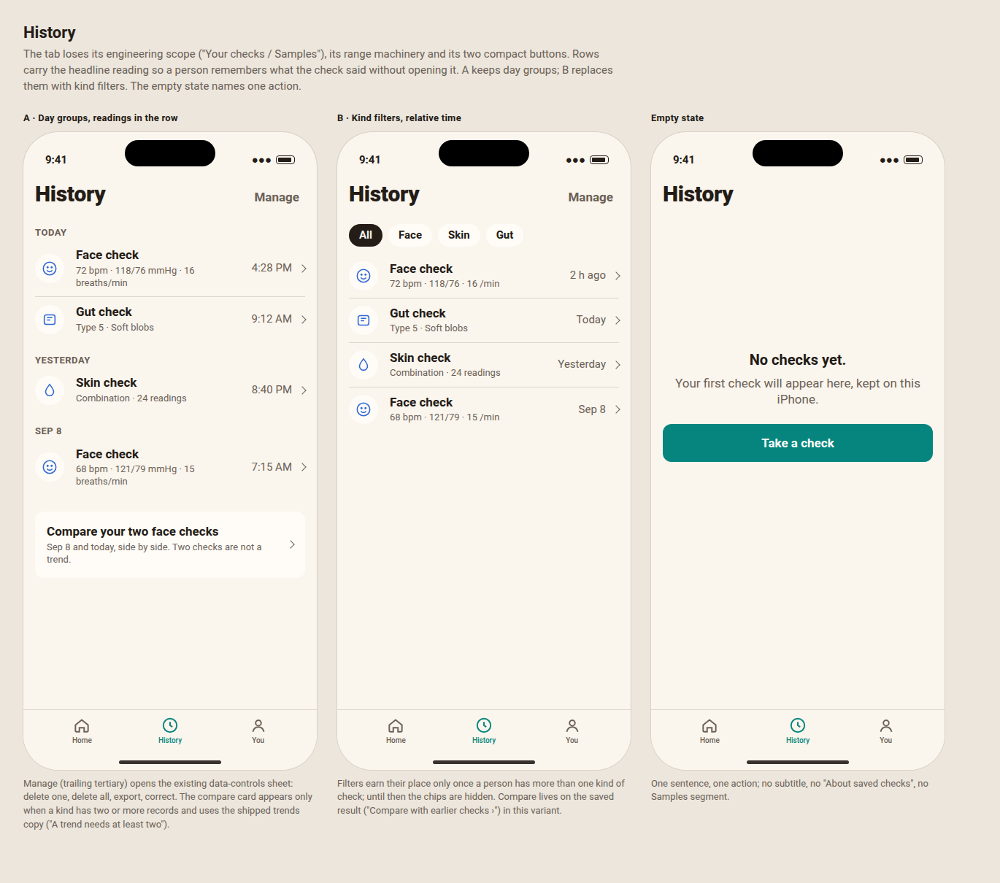Fable. No Samples. Headline reading in the row. The comment box below is for these History screens. History Samples Drop Samples from Release (Debug only) Keep Samples in Release Mock another round — show more directions Your comments on the History screens above
Tabs & settings Open Starting pick: Home · Health · History. “You” is out. August Living Spiral had a fourth tab, Learn. Settings often live as a gear top-right, not a tab. No phones in this card — comments are for chrome, not a screenshot above or below. Tab bar Home · Health · History Home · History · Settings Four tabs: Home · History · Learn · Profile Mock another round — show more directions Your comments on the tab bar Where settings live Gear top-right on Home Top-left A row inside Health Its own tab Mock another round — show more directions Your comments on settings placement Fourth tab / Learn No fourth tab. Demos stay on Home. Add Learn (not as the Gut hero) Decide after this TestFlight Mock another round — show more directions Your comments on a fourth tab
Make every number useful A 78 does not tell a person what to do. No fake bell curve without data. Steal Gut’s stack. Clinician language is allowed as check-in, not diagnosis. 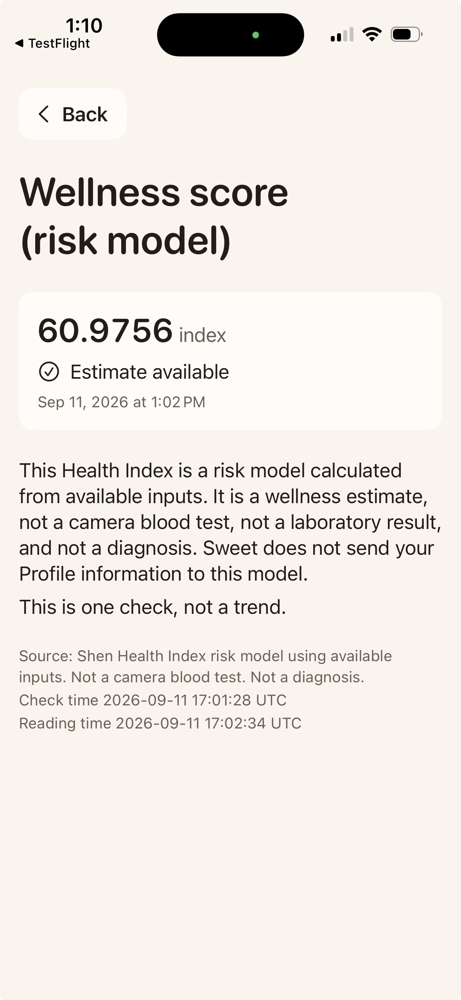60.9756 + four disclaimer sentences. “Tells me nothing.” 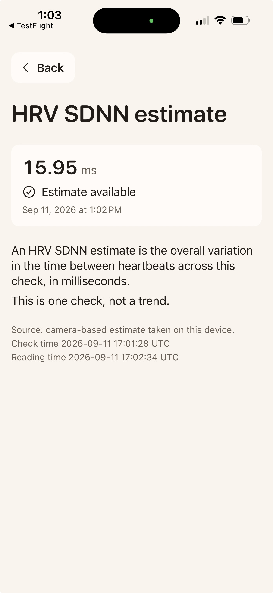HRV 15.95 ms, dictionary definition, no range. 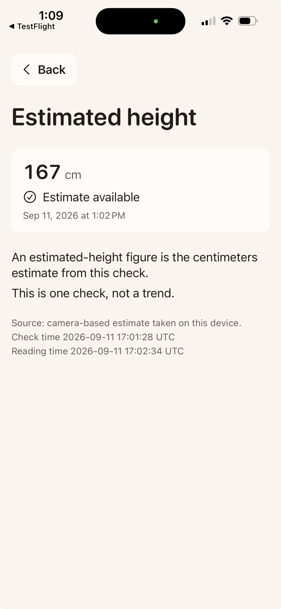167 cm only. Ranya wants inches and pounds too. The comment box below is for these “number with no so-what” screens. How numbers become useful Mock another round — show more directions for meaning Your comments on the screens above
Ranya’s TestFlight notes Bind unless you override “Why is See Bristol Scale so big?? And why is it before the actual check?? Also why is the logo a book??”Home · rgh21 “Must explain results in simple terms… part of every result by default. Then Ask if need further info… One simple statement.”Shen detail HRV: “a higher resting heart rate variability (HRV) is considered healthy. It means that your heart is more flexible to the changing needs of your body.” Each pair below is its own question. Comments apply to that pair, not the quotes above. Gut on Home Gut on Home is a check, not Bristol school Keep featured Bristol card Mock another round — show more directions Your comments on this Explain results by default Explain every result by default; Ask is further info Keep Ask as where meaning lives Mock another round — show more directions Your comments on this Disclaimers One quiet honesty line, not a stack Keep per-screen disclaimer blocks Mock another round — show more directions Your comments on this Units Locale: lb and in; BMI/BCI follow Keep cm/kg only Mock another round — show more directions Your comments on this HRV copy Use her HRV so-what sentence Write different HRV copy later Mock another round — show more directions Your comments on this Face oval / timeout Green progress; timeout coaches, no 16 empty rows Leave capture chrome as shipped Mock another round — show more directions Your comments on this